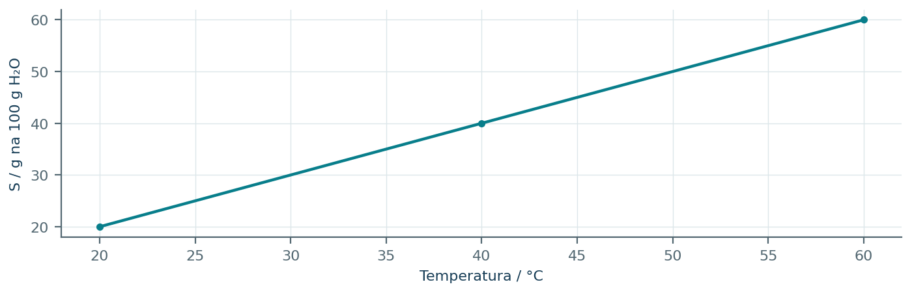
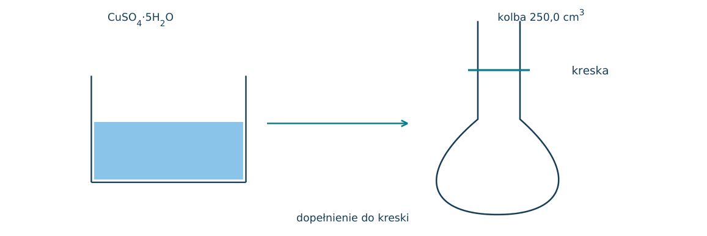
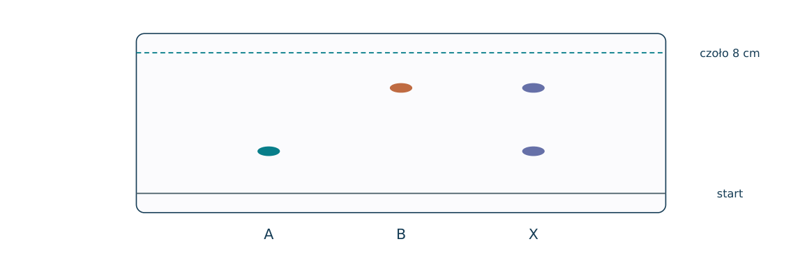
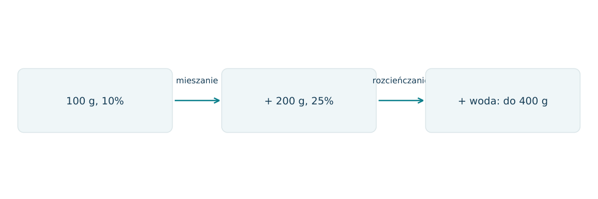
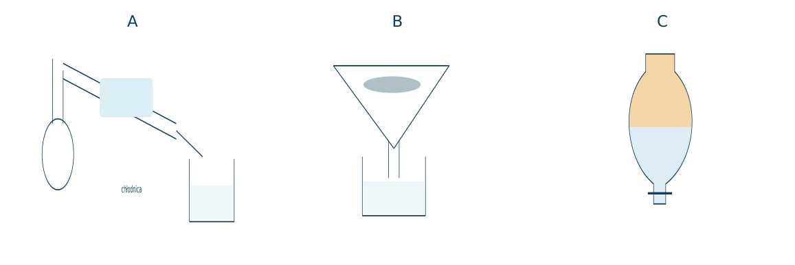
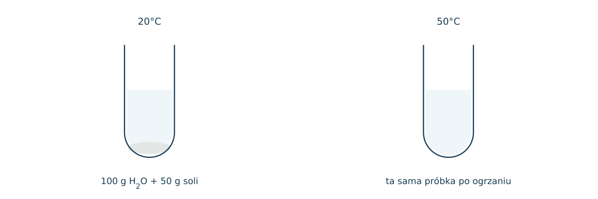
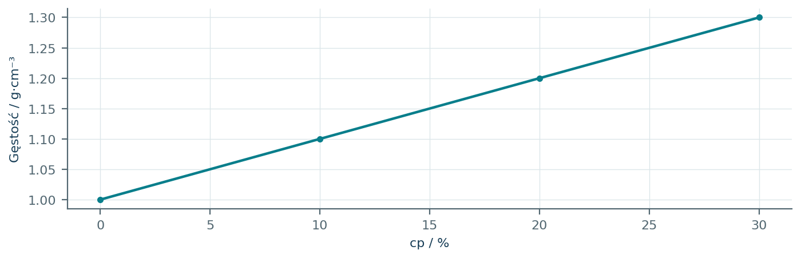
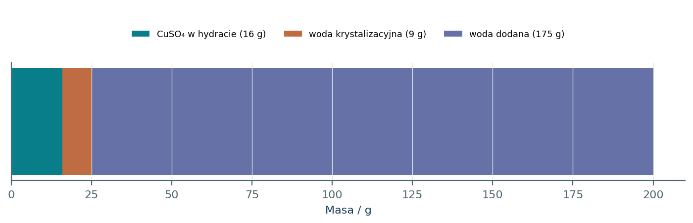

04.01 · 1 pkt
Przyporządkuj układ: roztwór NaCl, mleko, piasek w wodzie do roztworu właściwego, emulsji i zawiesiny.
Rozwiązanie
- NaCl: roztwór właściwy; mleko: emulsja; piasek w wodzie: zawiesina.
50 zadań · 110 pkt · odpowiedzi rozwijane po samodzielnej próbie
← KatalogZadania PDFRozwiązania PDFDane do obliczeń: H 1; C 12; N 14; O 16; Na 23; Mg 24; Al 27; P 31; S 32; Cl 35,5; K 39; Ca 40; Cr 52; Mn 55; Fe 56; Cu 64; Zn 65; Ag 108; Br 80; I 127; Ba 137 (g/mol). NA = 6,02·1023 mol-1. Vm = 22,4 dm3/mol w warunkach normalnych (0°C, 1013 hPa). W 25°C Kw = 10-14. Dane podane w zadaniu mają pierwszeństwo.
Przyporządkuj układ: roztwór NaCl, mleko, piasek w wodzie do roztworu właściwego, emulsji i zawiesiny.
Oceń zdania A i B, wpisując P albo F. Każde zdanie fałszywe popraw lub krótko uzasadnij. A: Stężenie molowe odnosi się do objętości całego roztworu. B: 20% masowych oznacza 20 g substancji na 100 g rozpuszczalnika.
W próbce rozprasza się wiązka światła, choć cząstek nie widać gołym okiem. Jaki typ układu sugeruje ten wynik?
Zaproponuj kolejność rozdzielenia mieszaniny NaCl i piasku z użyciem wody.
Wybierz metodę rozdzielenia etanolu i wody oraz wskaż wykorzystywaną różnicę właściwości.
Jakim przyrządem rozdzielisz dwie niemieszające się ciecze o różnych gęstościach?
W ekstrakcji jod przechodzi z wody do heksanu. Co to mówi o powinowactwie jodu do obu faz?
Na chromatogramie czoło rozpuszczalnika przesunęło się o 8,0 cm, a plama o 5,2 cm. Oblicz Rf, korzystając z Rf=d_plamy/d_czoła, i oceń jednostkę.
Dlaczego linię startową chromatogramu umieszcza się ponad powierzchnią eluentu?
W elektroforezie kation przemieszcza się ku elektrodzie ujemnej. Przewidź kierunek ruchu anionu i uzasadnij.
Oblicz stężenie procentowe roztworu z 15,0 g NaCl i 135,0 g wody.
Ile gramów substancji zawiera 250 g roztworu 12,0% masowych?
Ile wody trzeba dodać do 20 g substancji, aby otrzymać roztwór 5,0% masowych?
Oblicz molarność roztworu zawierającego 5,85 g NaCl w 500 cm3 roztworu. M=58,5 g/mol.
Ile gramów NaOH potrzeba do sporządzenia 250 cm3 roztworu 0,200 mol/dm3?
Roztwór HCl ma 10,0% masowych i gęstość 1,05 g/cm3. Oblicz molarność dla M(HCl)=36,5 g/mol.
Roztwór NaOH ma c=2,00 mol/dm3 i gęstość 1,08 g/cm3. Oblicz procent masowy NaOH.
Jaką objętość roztworu 2,00 mol/dm3 należy rozcieńczyć do 500 cm3, aby c=0,100 mol/dm3?
Do 100 g 20% roztworu dodano 150 g wody. Oblicz nowe stężenie procentowe.
Ze 200 g roztworu 10% odparowano 50 g wody. Substancja nie ulatnia się. Oblicz cp.
Zmieszano 100 g roztworu 10% i 200 g roztworu 25% tej samej substancji. Oblicz cp.
W jakim stosunku masowym zmieszać roztwory 10% i 40%, aby otrzymać 25%?
Zmieszano 100 cm3 0,10 mol/dm3 i 300 cm3 0,30 mol/dm3 NaCl. Oblicz c, przyjmując addytywność objętości.
Rozpuszczalność soli wynosi 25 g/100 g H2O. Oblicz procent masowy roztworu nasyconego.
Ile gramów soli rozpuści się maksymalnie w 240 g wody, jeśli S=30 g/100 g H2O?
Rozpuszczalność wynosi 60 g/100 g H2O w 60°C i 20 g/100 g H2O w 20°C. Ochłodzono roztwór nasycony zawierający 150 g wody. Ile bezwodnej soli wykrystalizuje? Pomiń parowanie.
Ochłodzono 200 g roztworu nasyconego o S=100 g/100 g H2O do temperatury, w której S=40 g/100 g H2O. Ile bezwodnej soli powstanie? Pomiń parowanie.
Ile gramów CuSO4·5H2O potrzeba do sporządzenia 100 g roztworu zawierającego 8,0% bezwodnego CuSO4? M(soli)=160, M(hydratu)=250 g/mol.
Rozpuszczono 25,0 g CuSO4·5H2O w 175,0 g wody. Oblicz procent masowy bezwodnego CuSO4. Masy molowe: 250 i 160 g/mol.
Oblicz masę 100 cm3 roztworu o gęstości 1,20 g/cm3 oraz masę soli w nim, jeśli cp=15%.
Opisz sporządzenie 250 cm3 roztworu NaCl o c=0,100 mol/dm3 ze stałej soli. Podaj masę i odpowiednie szkło.
Dlaczego po rozpuszczeniu substancji objętość ustala się do kreski kolby, zamiast dodawać zadaną objętość wody?
Dlaczego przed dopełnieniem do kreski należy ochłodzić roztwór, który ogrzał się przy rozpuszczaniu?
Uczeń odmierza stężony kwas, a następnie wlewa do niego wodę. Popraw sposób przygotowania roztworu.
Czy dodanie niewielkiej ilości soli do roztworu nasyconego zawsze zwiększy jego stężenie? Załóż stałą temperaturę.
Dane S soli [g/100 g H2O]: 20°C: 20; 40°C: 35; 60°C: 60. Narysuj wykres i oszacuj S w 50°C, stosując interpolację liniową.
Przykładowy rysunek rozwiązania znajduje się w PDF-ie z rozwiązaniami przy tym numerze.
20 g soli dodano do 50 g wody przy S=30 g/100 g H2O. Oblicz masę osadu i określ, czy przesącz jest nasycony.
W dwóch ekstrakcjach zastosowano tę samą łączną objętość rozpuszczalnika. Z informacji wynika, że każda świeża porcja usuwa połowę substancji pozostającej w wodzie. Ile procent zostanie po dwóch takich etapach?
Na chromatogramie próbka ma dwie plamy, z których jedna ma Rf identyczne ze wzorcem X. Czy to dowodzi czystości próbki? Uzasadnij.
W 60°C rozpuszczalność bezwodnej soli wynosi 80 g/100 g H2O, a w 20°C 20 g/100 g H2O. Ochłodzono 180 g roztworu nasyconego bez parowania. a) Oblicz masę wody. b) Masę kryształów. c) Procent masowy soli w przesączu. d) Opisz oddzielenie i wysuszenie produktu.
Każdy numer 41-50 oznacza jedno zadanie główne; podpunkty są oceniane osobno.
Wykres pokazuje rozpuszczalność bezwodnej soli w wodzie. Przy 60°C otrzymano 240 g roztworu nasyconego, a następnie ochłodzono go do 20°C bez parowania. Kryształy nie zawierają wody.

04.41.1 (2 pkt) Oblicz początkowe masy soli i wody.
04.41.2 (1 pkt) Oblicz masę wydzielonych kryształów i cp przesączu.
04.41.3 (1 pkt) Zaproponuj rozdzielenie mieszaniny po ochłodzeniu i uzasadnij wybór temperatury przemywania.
m(H2O)=240/1,60=150 g; m(soli)=90 g.
Zostaje 30 g soli w roztworze, krystalizuje 60 g; cp=30/180·100%=16,7%.
Sączenie; niewielka ilość zimnej wody ogranicza rozpuszczenie produktu w porównaniu z ciepłą.
Do kolby miarowej 250,0 cm3 sporządzono roztwór CuSO4 z CuSO4·5H2O. Chciano uzyskać c(Cu2+)=0,200 mol/dm3. M hydratu=250 g/mol, M soli bezwodnej=160 g/mol. Schemat przedstawia użyte szkło.

04.42.1 (2 pkt) Oblicz masę hydratu, którą należy odważyć.
04.42.2 (1 pkt) Dlaczego nie wystarczy dodać do soli 250,0 cm3 wody?
04.42.3 (1 pkt) Uczeń odważył 8,00 g hydratu, myląc go z solą bezwodną. Oblicz rzeczywiste c(Cu2+).
n=0,200·0,2500=0,0500 mol; m=12,50 g.
Docelowa jest objętość roztworu, a nie samej wody; objętości składników nie są ściśle addytywne.
n=8,00/250=0,0320 mol; c=0,128 mol/dm3.
Barwnik rozdziela się między wodę i niemieszający się z nią rozpuszczalnik organiczny. Podano K=c_org/c_wod=4. Po ustaleniu równowagi każdą fazę można oddzielić. Początkowo 100 mg barwnika jest w 100 cm3 wody.
04.43.1 (2 pkt) Oblicz masę pozostającą w wodzie po jednej ekstrakcji 50 cm3 rozpuszczalnika.
04.43.2 (2 pkt) Oblicz masę pozostającą po dwóch kolejnych ekstrakcjach porcjami po 25 cm3.
04.43.3 (1 pkt) Wybierz skuteczniejszą procedurę przy tej samej łącznej objętości i uzasadnij wynikiem.
(100-m)/50=4m/100, więc m=33,3 mg.
Każda porcja pozostawia połowę ilości w wodzie; po dwóch zostaje 25,0 mg.
Dwie porcje po 25 cm3 usuwają 75 mg, jedna 50 cm3 usuwa 66,7 mg; korzystniejsze są dwie ekstrakcje.
Na płytce rozwijano wzorce A, B oraz mieszaninę X w tym samym układzie. Czoło eluentu przemieściło się o 8,0 cm. Plamy wzorców: A 2,4 cm, B 6,0 cm; X ma plamy na obu tych wysokościach.

04.44.1 (2 pkt) Oblicz Rf obu wzorców i przypisz składniki X.
04.44.2 (1 pkt) Czy zgodność Rf stanowi bezwzględny dowód identyczności? Uzasadnij.
04.44.3 (1 pkt) Wyjaśnij, dlaczego linię startu należy umieścić nad poziomem eluentu w komorze.
Rf(A)=0,30; Rf(B)=0,75; X jest zgodna z obecnością A i B.
Nie; różne substancje mogą mieć taki sam Rf, warto użyć drugiego układu lub dodatkowej metody.
Próbki nie mogą rozpuścić się bezpośrednio w zbiorniku eluentu; mają być unoszone przez czoło fazy ruchomej.
Do kolby trafiają dwie porcje roztworów NaCl: 100 g 10% oraz 200 g 25%. Następnie dodano wodę do masy całkowitej 400 g. Procenty oznaczają udziały masowe soli.

04.45.1 (2 pkt) Oblicz masę NaCl po zmieszaniu i końcowe cp.
04.45.2 (1 pkt) Oblicz ilość dodanej wody i cp przed jej dodaniem.
04.45.3 (1 pkt) Czy zamiana 200 g drugiego roztworu na 200 cm3 daje identyczny bilans? Jakiej danej brakuje?
m(NaCl)=10+50=60 g; cp=60/400·100%=15,0%.
Dodano 100 g wody; przed rozcieńczeniem cp=60/300·100%=20,0%.
Nie musi; potrzebna gęstość drugiego roztworu, aby przeliczyć objętość na masę.
Zestaw A przedstawia destylację, B sączenie, a C rozdzielacz. Do rozdzielenia są: piasek w wodzie, etanol z wodą oraz olej z wodą. Dopasowanie ma wynikać z właściwości fizycznych składników.

04.46.1 (2 pkt) Dopasuj trzy mieszaniny do zestawów i wskaż wykorzystane różnice właściwości.
04.46.2 (1 pkt) Czy zwykłe sączenie rozdzieli NaCl(aq)? Wyjaśnij.
04.46.3 (1 pkt) Dlaczego chłodnicę wodną zwykle zasila się od dolnego króćca?
Piasek/woda B: rozmiar nierozpuszczalnych cząstek; etanol/woda A: lotność; olej/woda C: niemieszalność i gęstość.
Nie, rozpuszczone jony przechodzą przez sączek wraz z wodą.
Umożliwia pełne wypełnienie płaszcza wodą i skuteczne chłodzenie bez dużych kieszeni powietrza.
Do 100 g wody dodano 50 g soli. Rozpuszczalność w 20°C wynosi 30 g/100 g H2O, a w 50°C 60 g/100 g H2O. Schemat obrazuje stan próbki w dwóch temperaturach; pomiń parowanie.

04.47.1 (2 pkt) Oblicz masę nierozpuszczonej soli w 20°C i cp fazy ciekłej.
04.47.2 (1 pkt) Czy roztwór w 50°C jest nasycony? Uzasadnij bilansem.
04.47.3 (1 pkt) Ile soli trzeba dodać w 50°C, aby uzyskać nasycenie bez zmiany ilości wody?
Osad 20 g; w cieczy 30 g soli i 100 g wody, cp=23,1%.
Nie; rozpuszczone 50 g to mniej niż rozpuszczalność 60 g na 100 g wody.
10 g dodatkowej soli.
Wykres przedstawia zależność gęstości wodnego NaOH od cp w przyjętym zakresie temperatury. Do obliczeń odczytaj dla 20% gęstość 1,20 g/cm3. Z tego roztworu sporządzono 500 cm3 0,300 mol/dm3 NaOH.

04.48.1 (2 pkt) Oblicz c roztworu wyjściowego.
04.48.2 (1 pkt) Oblicz objętość roztworu wyjściowego potrzebną do rozcieńczenia.
04.48.3 (1 pkt) Dlaczego końcową objętość ustala się po ostudzeniu roztworu?
1 dm3 ma 1200 g i 240 g NaOH; n=6,00 mol, c=6,00 mol/dm3.
V=1=c2V2/c1=0,300·0,500/6,00=0,0250 dm3=25,0 cm3.
Rozcieńczanie może wydzielać ciepło; objętość i kalibracja kolby zależą od temperatury.
Rysunek pokazuje kroplę oleju w wodzie i cząsteczki surfaktantu, których głowy są polarne, a ogony niepolarne. Założono brak reakcji chemicznej oleju podczas doświadczenia.
04.49.1 (2 pkt) Zaznacz, która część surfaktantu kontaktuje się z olejem, a która z wodą. Wyjaśnij.
04.49.2 (1 pkt) Wyjaśnij, dlaczego rozproszenie oleju może być trwalsze po dodaniu surfaktantu.
04.49.3 (1 pkt) Czy otrzymano roztwór właściwy oleju? Uzasadnij klasyfikację.
Niepolarne ogony w oleju, polarne głowy ku wodzie; odpowiada to powinowactwu obu fragmentów do faz.
Warstwa surfaktantu stabilizuje granicę faz i ogranicza łączenie się kropelek.
Nie, to emulsja: krople odrębnej fazy ciekłej są rozproszone w wodzie, nie pojedyncze cząsteczki jednorodnego roztworu.
Do zlewki wprowadzono 25,0 g CuSO4·5H2O i 175,0 g wody. Schemat przypomina, że część masy hydratu stanowi woda krystalizacyjna. M(CuSO4)=160, M(hydratu)=250 g/mol.

04.50.1 (2 pkt) Oblicz cp bezwodnego CuSO4 w otrzymanym roztworze.
04.50.2 (1 pkt) Ile wody należy odparować, by osiągnąć 10,0%, bez krystalizacji i bez strat soli?
04.50.3 (1 pkt) Wyjaśnij błąd wynikający z przyjęcia całych 25 g jako masy substancji CuSO4.
m(CuSO4)=25·160/250=16,0 g; m roztworu=200,0 g; cp=8,00%.
Docelowa masa roztworu=16/0,10=160 g; odparować 40,0 g wody.
Część tych 25 g to 9 g wody krystalizacyjnej; jej zaliczenie do CuSO4 zawyża stężenie soli bezwodnej.